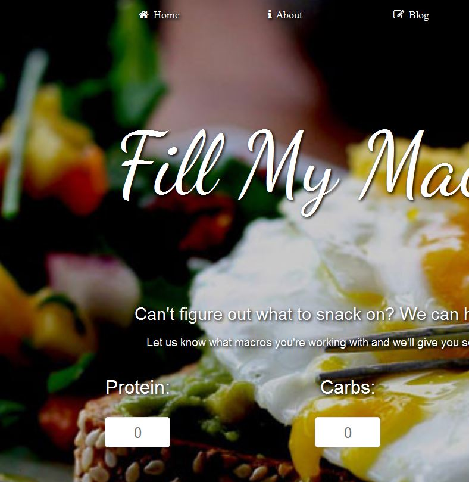
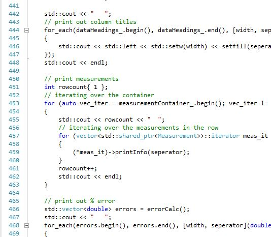

and I'm a 23 year old web developer, network security enthusiast and dog lover living in Newcastle-upon-Tyne, UK.
HTML | CSS | PHP | MySQL | Design
Read all about itSince 1994, I've thrown myself into all things technology and the internet. Even when I went to study at the University of Manchester for my Physics degree, I still managed to come back to it - and it's there I taught myself to program.
I currently work as a cybersecurity associate, but I spend a lot of my free time working on personal websites and programming challenges.
In making my design ideas a reality, I've taught myself HTML5, CSS3, PHP and MySQL. JQuery is the next thing on my horizon.
Fill My Macros
Fill My Macros is a tool to tell you what to eat (mainly if you follow the IIFYM style of diet - where you track your intake of protein, carbohydrates and fats). For some reason I find it really hard to figure out what to eat sometimes... and I'm pretty sure it's not just me.
Data Processing
As a Physicist, moving data between my lab book and my PC for processing was pretty much the worst thing imagineable. For my final project of my OOP C++ module, I designed a data processing program to handle my experimental data. Goodbye paper.
Charlotte@Github.io
My own spot on the web is a great place to express myself. I love minimalist design, whether it's dark and broody or light and airy. I also love jellyfish! More importantly, I love Bootstrap - it lets me focus on the important things (like pictures of jellyfish).